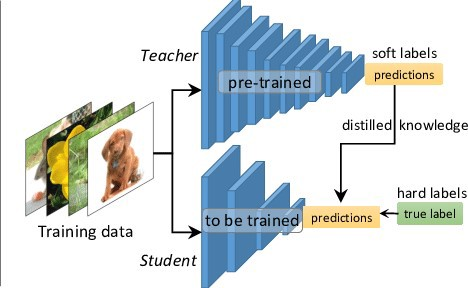
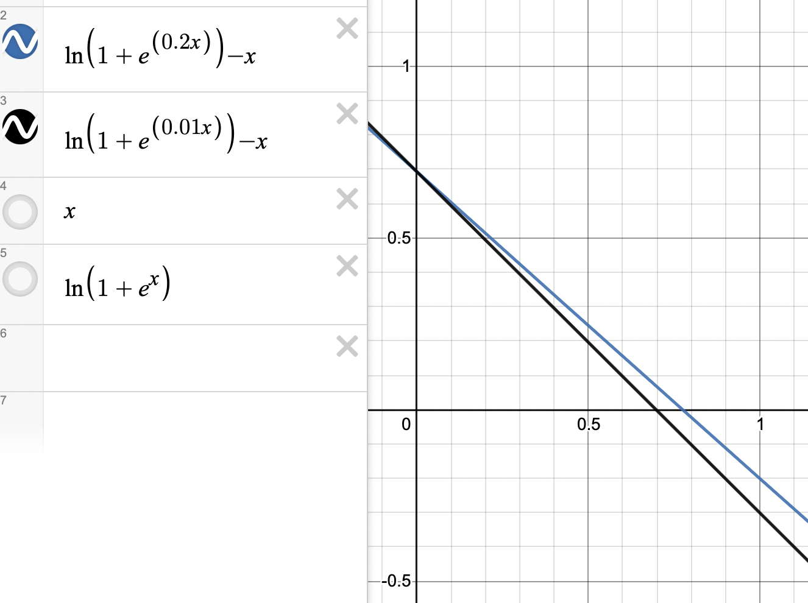

关于知识蒸馏温度T的一个简单解释(最优化函数拟合角度)
本篇文章用最优化近似的角度解释Softmax，并进一步对知识蒸馏的温度T做出解释。要解释知识蒸馏，首先要对它进行介绍。
知识蒸馏
知识蒸馏是Hinton于2015年提出的概念，借助一个大的、泛用性强的模型去训练一个小的、专有性(用于执行某一特定功能)强的模型。
具体做法是，同样的输入分别通过大模型(Teacher模型)和小模型(Student模型)，产生预测值。Teacher模型的预测值为$v_i$，Student模型的预测值为$z_i$。让Student模型的输出$z_i$同时和$v_i$、GT做近似。
可以看出来，和平常的神经网络训练相比，知识蒸馏的训练方法引入了Teacher模型的输出作为一个近似的Label。因为如果是做图像分类任务的话，它通常是一个经过Softmax处理后的概率分布，所以我们也叫它soft label。至于GT，因为它是one-hot形式的，所以也叫它hard label。
综上，整体Loss分为两部分：$L_{soft}$和$L_{hard}$，其中
$$
\begin{aligned}
&L_{soft}=-\sum\limits_{i}^Np_i\log q_i\
&p_i=\frac{\exp(v_i/T)}{\sum \exp(v_j/T)}\
&q_i=\frac{\exp(z_i/T)}{\sum\exp(z_j/T)}
\end{aligned}
$$
$$
\begin{aligned}
&L_{hard}=-\sum\limits_i^Nc_i\log(q_i)\
&q_i=\frac{\exp(z_i)}{\sum\exp(z_j)}
\end{aligned}
$$
至于为什么soft loss的部分输出要除以T后再做Softmax，有一个直观上的解释：
富有经验的Teacher模型通常会输出一个置信度非常高的结果，也就是说，输入是某一类的概率非常大，整体的概率分布非常尖锐(信息熵小)。而我们训练Student模型则想让他去学习整体的分布情况(信息熵大)，除以T后，整体的概率分布趋于平滑，分布的熵越大，Teacher模型输出所含的信息也会增多，Student模型会学习这样的概率分布。
所以，整体的Loss由这两个部分loss加和组成，至于为什么起名叫知识蒸馏：
因为用高温T蒸馏出大模型所含的”知识”，让小模型去学习这些知识。
最优化角度推导Softmax
介绍完知识蒸馏，已经可以直观上理解温度T的作用了，但是要从数值上解释它之前，还要引入一些东西。先从最优化角度推导Softmax开始。
对于一个分类问题来说，假设一共有$C$个类别，那么对于一个样本，我们希望它的真值标签(ground-truth label)比别的类别对应的输出概率要大。
也就是对应优化目标：
输出C个概率/score，使目标分数最大。
换成数学语言，也就是 $z_y=\max{z_i}$
那么，对应的损失函数就是：
$$
L=\max(\max\limits_{i\neq y}{z_i}-z_y,0)
$$
外面套了一个ReLU函数，我们希望在$z_y$已经是最大值的时候，也就是$\max\limits_{i\neq y}{z_i}-z_y$为负的时候，Loss为0。因为此时已经达到优化目标了，不需要再优化。
接下来就要用光滑函数来替代这个函数了，毕竟max函数不可导。
介绍两个重要的近似函数(详细的推导放在这一节的最后)
1、$\max{z_i}$函数的近似
$$
\max{x_i}=\log\sum e^{x_i}
$$
2、ReLU函数 $\max(x,0)$的近似
$$
\max(x,0)=\log(1+e^x)
$$
由这两个函数，我们可以替换原来的loss。
$$
\begin{aligned}
L&=\max(\log\sum e^{z_i}-z_y,0)\
&=\log(1+\exp(\log\sum e^{z_i}-z_y))\
&=\log(1+\frac{\exp(\log\sum e^{z_i})}{e^{z_y}})\
&=\log(\frac{\sum’e^{z_i}}{e^{z_y}})\
&=-\log{\frac{e^{z_y}}{\sum’e^{z_i}}}
\end{aligned}
$$
这就是我们熟知的softmax交叉熵损失函数了(默认和平均分布计算交叉熵, 也就是前面乘的概率是$\frac{1}{p}$)
$\max{z_i}$函数的光滑近似
在数学分析中，有一个关于最大值函数的公式，即当$x\ge 0, y\ge 0$，有
$$
\max(x,y)=\frac{1}{2}(|x+y|+|x-y|)
$$
那么，为了寻找一个最大值的函数，首先可以考虑寻找一个能够近似表示绝对值$|x|$的函数。
为了逐步推进问题，我们对$f(x)=|x|$求导，除了$x=0$这一点外，其他的导数为：
$$
f’(x)=
\begin{cases}
1, &x>0\
-1,&x<0
\end{cases}
$$
这是一个简单的分段函数，跟他最接近的，应该是单位阶跃函数$\theta(x)$：
$$
\theta(x)=
\begin{cases}
1, &x>0\
0, &x<0
\end{cases}
$$
那么，
$$
f’(x)=2\theta(x)-1
$$
下面只要寻求$\theta(x)$的近似函数，物理学家已经提供现成的函数给我们了，一个比较简单的形式是 ref: 维基百科: 单位阶跃函数
$$
\theta(x)=\lim\limits_{k\rightarrow +\infty}\frac{1}{1+e^{-kx}}
$$
那么就可以取$\frac{1}{1+e^{-kx}}$作为近似函数了，代入$f’(x)$得到$\frac{2e^{kx}}{1+e^{kx}}-1$，积分得到
$$
\begin{aligned}
f(x)&=\frac{2}{k}\ln(1+e^{kx})-x\
&=\frac{1}{k}[\ln(1+e^{kx})+\ln(1+e^{-kx})]\
&=\frac{1}{k}\ln(2+e^{kx}+e^{-kx})
\end{aligned}
$$
不难发现，上面式子中的对数部分，在$k$足够大的时候，常数的影响很小，把它去掉之后，我们有一个比较简单的绝对值函数：
$$
|x|=\lim\limits_{k\rightarrow +\infty}\frac{1}{k}\ln(e^{kx}+e^{-kx})
$$
结合上式和最开始的绝对值式子，我们可以得到：
$$
\max(x,y)=\lim\limits_{k\rightarrow +\infty}\frac{1}{2k}{\ln( e^{k(x+y)}+e^{-k(x+y)})+\ln(e^{k(x-y)}+e^{-k(x-y)})}
$$
化简上面式子，我们可以得到
$$
\max(x,y)=\lim\limits_{k\rightarrow +\infty}\frac{1}{2k}\ln(e^{2kx}+e^{-2kx}+e^{2ky}+e^{-2ky})
$$
由于最开始的绝对值式子是在$x\ge 0, y\ge 0$时成立，所以上面式子的$e^{-2kx}$和$e^{-2ky}$都不重要了，也把他们去掉，进一步得到：
$$
\max(x,y)=\lim\limits_{k\rightarrow +\infty}\frac{1}{2k}\ln(e^{2kx}+e^{2kx})
$$
或者写成
$$
\max(x,y)=\lim\limits_{k\rightarrow +\infty}\frac{1}{k}\ln(e^{kx}+e^{ky})
$$
上式正是希望得到的理想的最大值函数，虽然推导是基于$x\ge 0,y\ge 0$，但是不难发现，对于负数情况，上面式子仍然成立，甚至可以推广到多个变量的最大值函数：
$$
\max(x,y,z,…)=\lim\limits_{k\rightarrow +\infty}\frac{1}{k}\ln(e^{kx}+e^{ky}+e^{kz}+…)
$$
关于光滑max函数的更多性质，参见Matrix67的《如何构造一个平滑的最大值函数》
观察最终结果可以看出，实际上max函数做了一个这样的事情：
找一个在整个实数域上都单调递增的函数，而且增长速度要快于线性增长，然后求和，最后取逆函数。
知识蒸馏中温度T的作用
好，现在知道了Softmax函数的光滑近似，开始推导除以T的作用。
原来的推导过程如下：
$$
\begin{aligned}
L&=\max(\log\sum e^{z_i}-z_y,0)\
&=\log(1+\exp(\log\sum e^{z_i}-z_y))\
&=\log(1+\frac{\exp(\log\sum e^{z_i})}{e^{z_y}})\
&=\log(\frac{\sum’e^{z_i}}{e^{z_y}})\
&=-\log{\frac{e^{z_y}}{\sum’e^{z_i}}}
\end{aligned}
$$
使用的两个近似函数如下：
1、$\max{z_i}$函数的近似
$$
\max{x_i}\approx\log\sum e^{x_i}
$$
2、ReLU函数 $\max(x,0)$的近似
$$
\max(x,0)\approx\log(1+e^x)
$$
原优化损失函数为：
$$
L=\max(\max\limits_{i\neq y}{z_i}-z_y,0)
$$
那么除以一个温度T，本质上是在做乘以一个系数s。
那么新的优化损失函数是：
$$
L=\max(\max\limits_{i\neq y}{sz_i}-sz_y,0)
$$
乘以一个$s$本来对优化过程没有任何影响，但是在做近似的时候，会有影响。
也就是$\max(x,0)\approx \log(1+e^x)$和$\max(sx,0)\approx\log(1+e^{sx})$的区别。
为了方便讨论，这里设$x>0$，实际上输出的也是概率，所以这个假设也是合理的。
为了衡量近似程度，把约等式相减，计算误差，可以得到：
$$
|\log(1+e^x)-x|>|\log(1+e^{sx})-sx|
$$
乘以$s$后，误差变得更小，也就是和原函数近似程度更高，也就是采用了更光滑的近似。
或者从图上直观解释，画出了$\ln(1+e^{0.2x})-x$和$\ln(1+e^{0.01x})-x$的图像：
黑色是$\ln(1+e^{0.01x})-x$, 蓝色是$\ln(1+e^{0.2x})-x$
这里的$s$分别取了0.01和0.2(换算成对应的温度是T=100和T=50)
可以看到，$s=0.01$时(黑色)，在近似原函数$\max(x,0)$时，近似函数对小于$0.7$的值，将其值增大了($\ln(1+e^{0.01x})-x>0$)，这个增大的趋势线性衰减。对于大于$0.7$的值，将其值减小了$\ln(1+e^{0.01x})-x<0$。
而$s$的不同，关键在于线性增大/减小的趋势不同，和增大/减小的阈值(图中和$x$轴的交点)不同。
综上所述，$T$的作用其实是控制了对原函数的近似过程。大于某值，使它衰减，小于某值，使它增大。